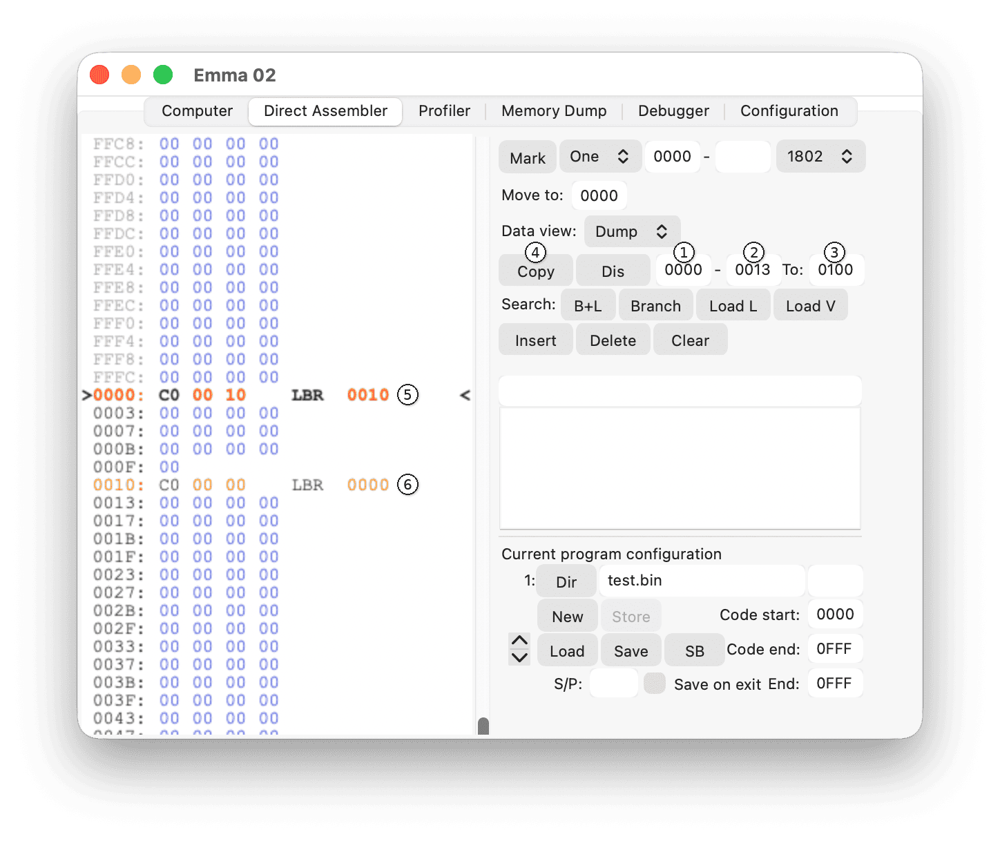
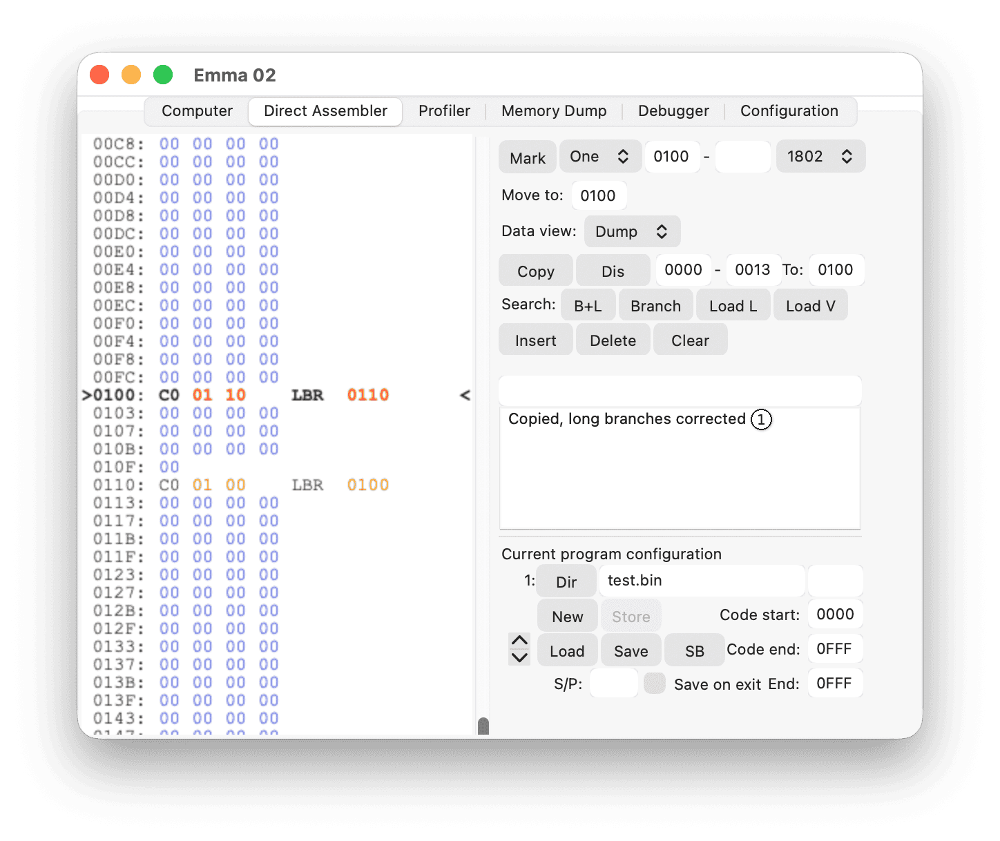
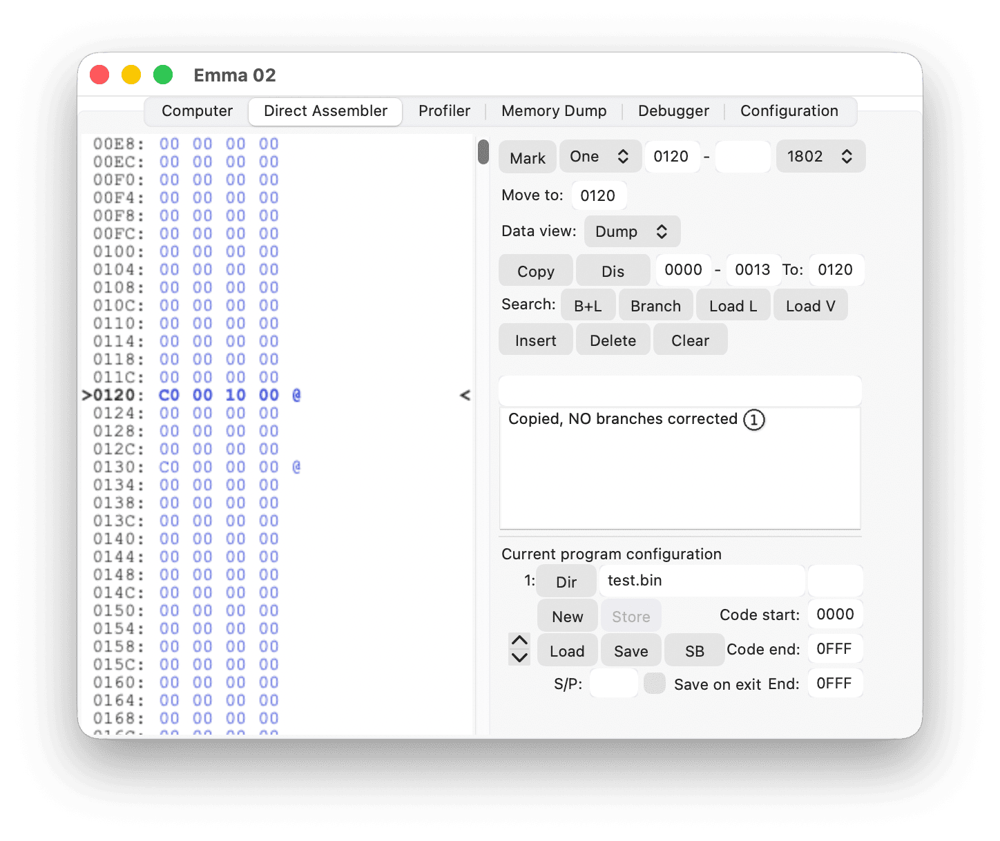

To copy data or code, first specify the start (1) and end (2) address. Then fill in the destination address (3). Press the Copy button (4) to execute the copy.

If code is copied to the same lower 8-bit start address, all long branches, branch data, reversed branch data, LDL/LDRL/RLDL instructions, and pseudo-code long branches will be converted. Pseudo-code long branches are listed in the Insert & Delete Code section under heading Pseudo variants - Instructions, marked as aaa or aaaa.
The copy configured above will result in:

In the above example, the information that address 0000 (hexadecimal) and 0010 (hexadecimal) contain 1802 instructions will be copied to 0100 (hexadecimal), resulting in 1802 code shown at 0100 and 0110 (hexadecimal).
Copying from 0000 to 0013 (hexadecimal) to destination 0120 (hexadecimal) will, however, result in:
